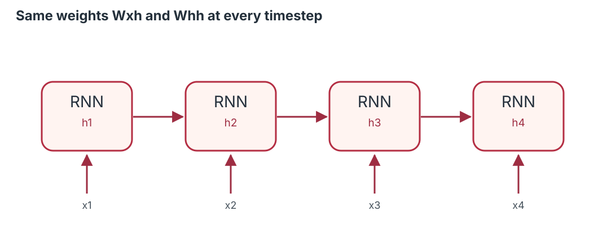
A sequence is more than a set of observations.
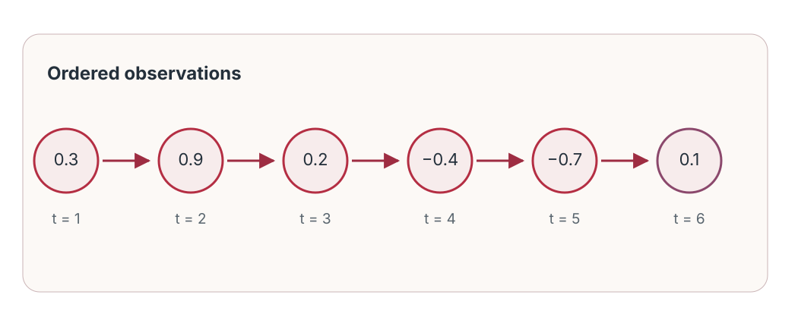
Quick poll (40 seconds): 2, 4, 6, 8, ?
Easy when the rule is local and clear: 10.
But real sequences can contain delayed effects, noise, nonlinearity, and evolving regimes.
A model needs a representation of what has happened so far.
Our teaching sequence: intuition → architecture → mathematics → calculation → code → interpretation.
A sequence is an ordered collection:
\[\mathbf{x}_{1:T}=(\mathbf{x}_1,\mathbf{x}_2,\ldots,\mathbf{x}_T).\]
Forecasting
Predict future demand, load, or temperature.
Language
Classify sentiment or tag words in sentences.
Monitoring
Score multivariate sensor windows for abnormal behavior.
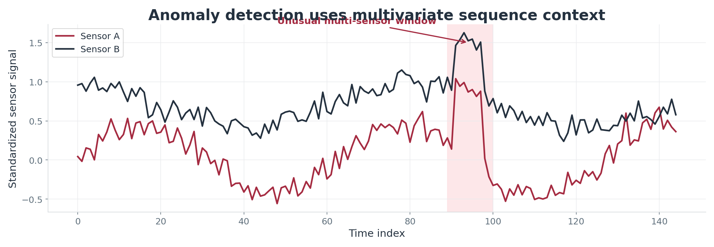
A feedforward network can learn from a fixed-size lag window—and may work very well.
RNNs provide an explicit sequential inductive bias, not a guarantee of better accuracy.
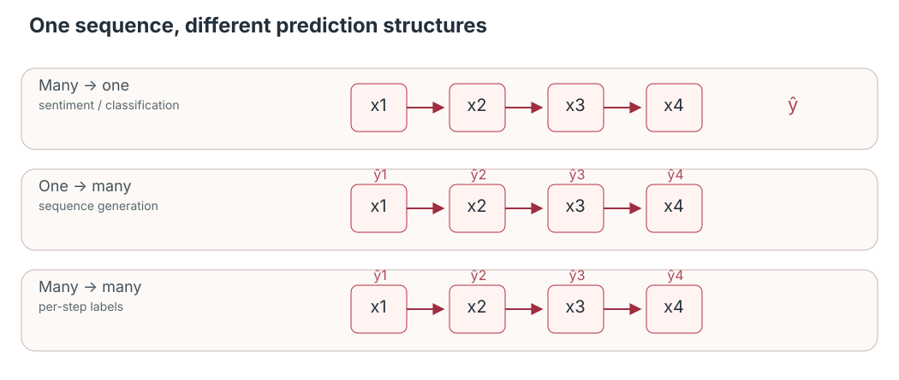
For batch-first recurrent layers:
\[\boxed{X\in\mathbb{R}^{N\times T\times F}}\]
| Symbol | Meaning | Example |
|---|---|---|
| \(N\) | batch size | 32 |
| \(T\) | timesteps (lookback) | 24 |
| \(F\) | features per step | 1 |
What shape represents 32 windows, each with 24 days and 3 sensors? (32, 24, 3)
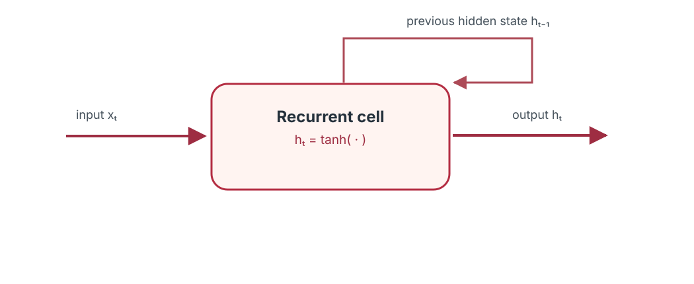
At each step:
\[\boxed{\mathbf{h}_t=f(\mathbf{x}_t,\mathbf{h}_{t-1})}\]
\(\mathbf{h}_t\) is a learned representation of the sequence prefix—not a perfect copy of the past.
\[\mathbf{a}_t=W_{xh}\mathbf{x}_t+W_{hh}\mathbf{h}_{t-1}+\mathbf{b}_h\]
\[\mathbf{h}_t=\tanh(\mathbf{a}_t)\]
One diagram for each timestep; one shared set of trainable parameters.
Dependencies extend backward along the chain of hidden states.
\[\boxed{\mathbf{h}_t=\tanh(W_{xh}\mathbf{x}_t+W_{hh}\mathbf{h}_{t-1}+\mathbf{b}_h)}\]
Let \(F\) = input features and \(H\) = hidden units.
\[W_{xh}\in\mathbb{R}^{H\times F},\quad W_{hh}\in\mathbb{R}^{H\times H},\quad \mathbf{b}_h\in\mathbb{R}^{H}.\]
For \(F=3\), \(H=8\): input-to-hidden has 24 weights; hidden-to-hidden has 64 weights, excluding biases.
Scalar values: \(h_0=0\), \(W_{xh}=0.5\), \(W_{hh}=0.4\), \(b=0\); \(x_1=1\), \(x_2=0\).
\[h_1=\tanh(0.5\cdot1+0.4\cdot0)=\tanh(0.5)\approx0.4621.\]
\[h_2=\tanh(0.5\cdot0+0.4\cdot0.4621)\approx0.1828.\]
Even with \(x_2=0\), the second state can carry information from \(x_1\).
A hidden state is usually not the final prediction.
\[\hat{\mathbf{y}}_t=g(W_{hy}\mathbf{h}_t+\mathbf{b}_y)\]
Many-to-one forecasting: pass the last hidden state to a regression head.
Computation grows with sequence length; the core parameter count does not.
Input: “The movie was surprisingly good.”
Would exchanging “good” and “not” potentially change the label? Yes.
For \(h_{t-1}=0.2\), \(x_t=-1\), \(W_{xh}=0.6\), \(W_{hh}=0.5\), \(b=0.1\):
\[h_t=\tanh(0.6x_t+0.5h_{t-1}+0.1)\]
Compute \(h_t\) and interpret its sign. (90 seconds)
Inside \(\tanh\): \(-0.6+0.1+0.1=-0.4\); therefore \(h_t\approx-0.3799\).
What works
What is difficult
Question for the next section: why can early observations have so little influence on learning?
For a sequence regression problem, a common objective is:
\[\mathcal{L}(\theta)=\frac1N\sum_{i=1}^N\big(\hat y_i-y_i\big)^2.\]
Parameter updates depend on:
\[\theta\leftarrow\theta-\eta\nabla_\theta\mathcal{L}.\]
The gradient must account for how an earlier hidden state influences later predictions.
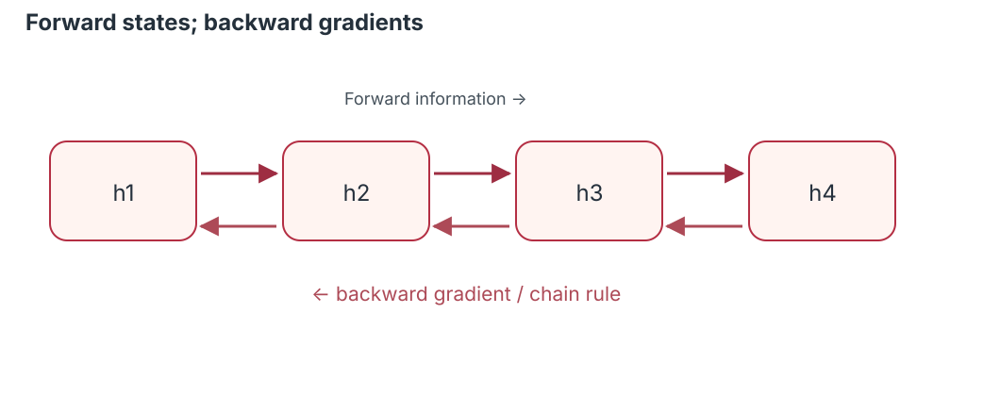
For \(k<t\), the chain rule gives:
\[\frac{\partial\mathbf h_t}{\partial\mathbf h_k}=\prod_{j=k+1}^{t}\frac{\partial\mathbf h_j}{\partial\mathbf h_{j-1}}.\]
Repeated Jacobian matrix products can shrink or amplify gradients depending on their singular values, the weights, and activation derivatives.
Long dependency paths can be hard to optimize even when information would be useful.
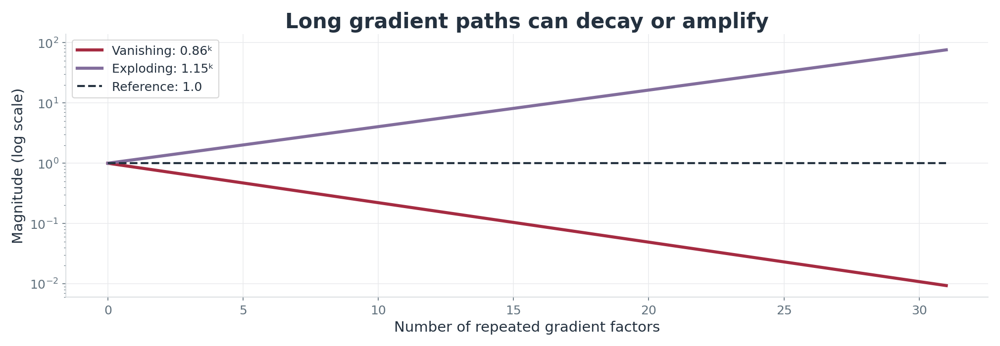
For a scalar repeated factor \(0.65\): \(0.65^{20}\approx0.00018\).
Small updates to parameters handling distant history → slow or ineffective learning.
A scalar repeated factor above 1 grows rapidly:
\[1.35^{20}\approx404.\]
Vanishing and exploding gradients are distinct phenomena requiring different mitigation strategies.
| Strategy | Main purpose | Limitation |
|---|---|---|
| Gradient clipping | Bound excessive gradient norm | Does not fix vanishing |
| Truncated BPTT | Reduce backward graph length | Limits learning across longer spans |
| Orthogonal initialization | Improve recurrent dynamics | No universal solution |
| Gated cells (LSTM/GRU) | Learn selective memory updates | More parameters and compute |
For a simplified scalar chain of 15 derivatives:
\(0.7^{15}\approx0.00475\); \(1.3^{15}\approx51.2\).
The actual system multiplies Jacobians, not one scalar factor.
A conventional RNN repeatedly overwrites a hidden representation.
A gated recurrent design can instead learn to:
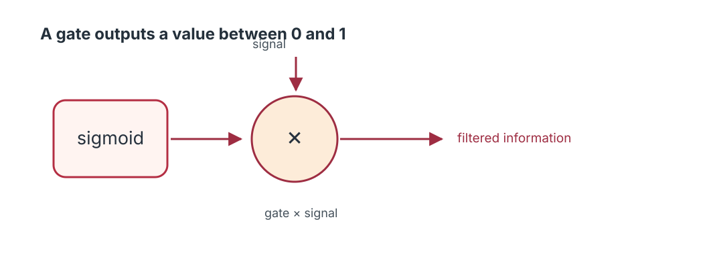
Long Short-Term Memory was introduced to improve learning across long dependencies.
Memory is controlled by learned gates, not simply carried forward unchanged.
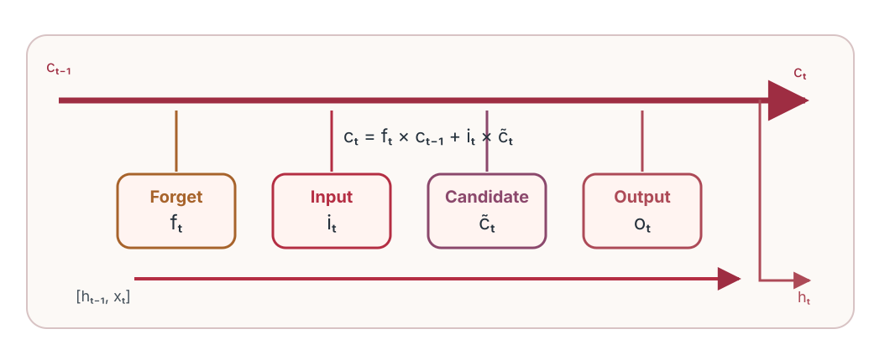
Simplified pedagogical schematic (not a complete tensor-level wiring diagram). The next slides define each gate mathematically.
Cell state \(\mathbf c_t\)
Carries an evolving memory representation, updated additively by forgetting and writing.
Hidden state \(\mathbf h_t\)
Controls what the cell exposes to the next layer or the prediction head.
\[\mathbf c_t=\mathbf f_t\odot\mathbf c_{t-1}+\mathbf i_t\odot\tilde{\mathbf c}_t\]
\[\sigma(z)=\frac{1}{1+e^{-z}}\in(0,1)\]
Gates are vectors; each memory component can be controlled differently.
\[\boxed{\mathbf f_t=\sigma(W_f[\mathbf h_{t-1},\mathbf x_t]+\mathbf b_f)}\]
The retained previous memory is:
\[\mathbf f_t\odot\mathbf c_{t-1}\]
If \(c_{t-1}=0.8\) and \(f_t=0.25\), retained contribution is 0.20.
The forget gate controls the old component of memory.
\[\boxed{\mathbf i_t=\sigma(W_i[\mathbf h_{t-1},\mathbf x_t]+\mathbf b_i)}\]
If \(i_t=0\), can the candidate change the cell state at this step? No, not through the input term.
\[\boxed{\tilde{\mathbf c}_t=\tanh(W_c[\mathbf h_{t-1},\mathbf x_t]+\mathbf b_c)}\]
Gate × candidate = controlled new information.
\[\boxed{\mathbf c_t=\mathbf f_t\odot\mathbf c_{t-1}+\mathbf i_t\odot\tilde{\mathbf c}_t}\]
Retain: \(f_t\odot c_{t-1}\)
Write: \(i_t\odot\tilde c_t\)
The additive path is a central reason LSTM can propagate some gradients more effectively than a conventional RNN.
\[\boxed{\mathbf o_t=\sigma(W_o[\mathbf h_{t-1},\mathbf x_t]+\mathbf b_o)}\]
The output gate controls the visible hidden state, rather than directly overwriting cell memory.
\[\mathbf h_t=\mathbf o_t\odot\tanh(\mathbf c_t)\]
If \(o_t\approx0\), is the cell state necessarily erased? No.
Example: \(c_t=0.62\) and \(o_t=0.7\).
\[h_t=0.7\,\tanh(0.62)\approx0.3858.\]
The same cell state can produce different hidden states depending on the output gate.
Many-to-one forecasting: a dense layer maps the final \(h_T\) to \(\hat y\).
\[\begin{aligned} \mathbf f_t&=\sigma(W_f[\mathbf h_{t-1},\mathbf x_t]+\mathbf b_f)\\ \mathbf i_t&=\sigma(W_i[\mathbf h_{t-1},\mathbf x_t]+\mathbf b_i)\\ \tilde{\mathbf c}_t&=\tanh(W_c[\mathbf h_{t-1},\mathbf x_t]+\mathbf b_c)\\ \mathbf c_t&=\mathbf f_t\odot\mathbf c_{t-1}+\mathbf i_t\odot\tilde{\mathbf c}_t\\ \mathbf o_t&=\sigma(W_o[\mathbf h_{t-1},\mathbf x_t]+\mathbf b_o)\\ \mathbf h_t&=\mathbf o_t\odot\tanh(\mathbf c_t) \end{aligned}\]
Forget → propose/write → update cell → expose hidden.
Given \(c_{t-1}=0.4\), \(f_t=0.8\), \(i_t=0.5\), \(\tilde c_t=0.6\), \(o_t=0.7\):
\[c_t=0.8(0.4)+0.5(0.6)=0.32+0.30=\boxed{0.62}.\]
\[h_t=0.7\tanh(0.62)\approx\boxed{0.3858}.\]
The gate values are given here; in a trained model they are learned functions of the input and previous hidden state.
Holding the gate values fixed locally, the cell-state update includes:
\[\frac{\partial\mathbf c_t}{\partial\mathbf c_{t-1}}\approx\mathrm{diag}(\mathbf f_t).\]
Improved gradient pathways—not a mathematical guarantee against vanishing gradients.
Assume \(c_{t-1}=0.7\) and candidate \(\tilde c_t=-0.4\).
Case A: \(f_t=1, i_t=0\) → new \(c_t\)?
Case B: \(f_t=0, i_t=1\) → new \(c_t\)?
Case C: \(f_t=0.5, i_t=0.5\) → new \(c_t\)?
Solutions: A = 0.7, B = −0.4, C = 0.15.
If \(o_t=0\), then \(h_t=0\) regardless of these cell values.
Goal: predict \(y_t\) from the previous 24 values.
\[\underbrace{(y_{t-24},\ldots,y_{t-1})}_{\text{model input}}\longrightarrow\hat y_t\]
We use a synthetic, reproducible 500-observation series with trend, periodic structure, and noise.
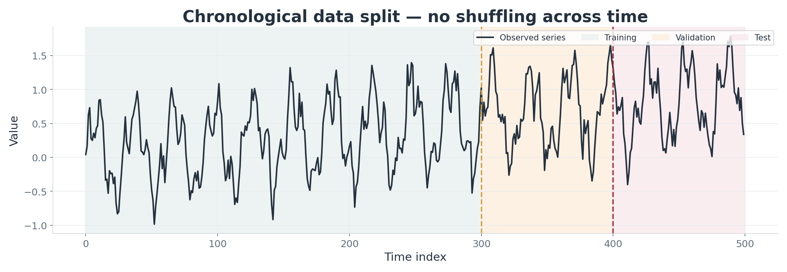
At each prediction time, inputs come only from earlier observations.
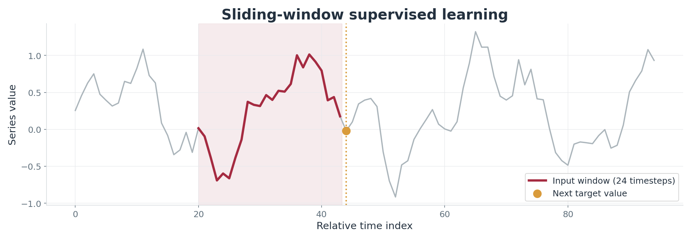
\[X_i=[z_i,\ldots,z_{i+23}]\in\mathbb{R}^{24\times1},\quad y_i=z_{i+24}.\]
The complete batch tensor has shape (number of windows, 24, 1).
For one-step forecasting, the persistence baseline is:
\[\hat y_t^{\mathrm{naive}}=y_{t-1}.\]
The test-set root mean squared error is:
\[\mathrm{RMSE}=\sqrt{\frac1{n_{test}}\sum_{t\in\mathrm{test}}(\hat y_t-y_t)^2}.\]
A complex model should be compared against a relevant simple forecast.
history <- model |> fit(
x = X[train, , , drop = FALSE],
y = Y[train, , drop = FALSE],
validation_data = list(
X[valid, , , drop = FALSE],
Y[valid, , drop = FALSE]),
epochs = 35, batch_size = 32,
callbacks = list(callback_early_stopping(
monitor = "val_loss", patience = 7,
restore_best_weights = TRUE)))Only the training partition drives gradient updates; validation guides early stopping.
Inverse-transform predictions before reporting RMSE in original units.
R outputs are generated when the R script runs; the deck does not invent R metric values.
Full source: python/train_models.py.
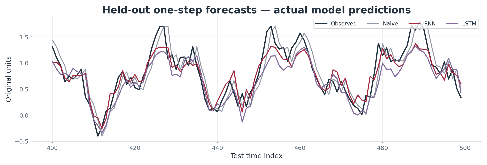
The plotted predictions were produced by running the provided script on the synthetic dataset (seed 42); one-step-ahead evaluation.
| Model | Test RMSE (original units) |
|---|---|
| Naive (last observation) | 0.2425 |
| PyTorch RNN | 0.2244 |
| PyTorch LSTM | 0.2635 |
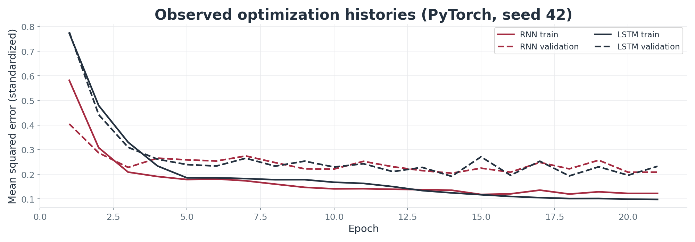
In this single reproducible run, RNN had the lowest test RMSE. LSTM is not automatically better.
Input: a token/embedding sequence \(E\in\mathbb R^{T\times d}\).
Embeddings → recurrent encoder → final hidden state → dense classifier.
A recurrent encoder is one design choice; modern attention-based encoders are also common.
A multivariate sequence window has shape \(T\times F\) with \(F>1\).
| Model | Main characteristic | Typical tradeoff |
|---|---|---|
| Vanilla RNN | Simple recurrent state | Struggles with some long dependencies |
| LSTM | Cell state + multiple gates | Heavier recurrent computation |
| GRU | Gated, fewer gate families | Often simpler than LSTM |
| Transformer | Attention across positions | Different context/memory costs |
There is no universal winner. Prefer evidence from a leak-free task-specific experiment.
A defensible model-selection checklist
Choose a model by task-specific evidence, not architecture popularity.
Exit question: Why is an additive cell-state path useful?
Practice: Run both scripts; repeat across multiple seeds; compare with the naive baseline.
Resources: references.bib · R/ · python/ · instructor_guide.md.
Muhammad Zikriya | Deep Learning for Sequential Data